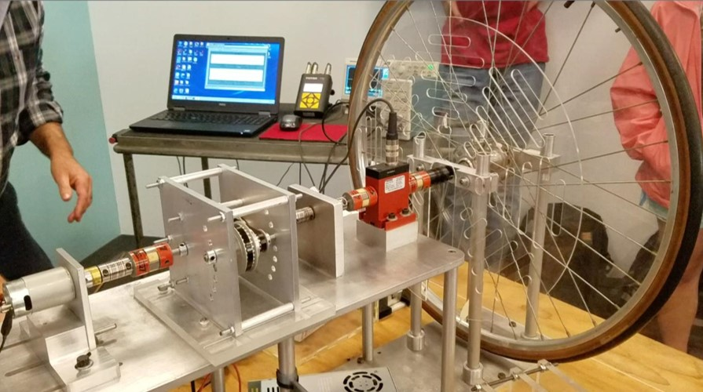
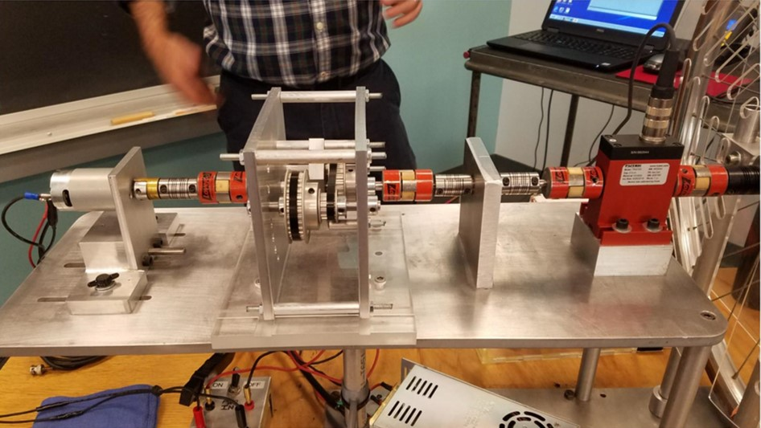
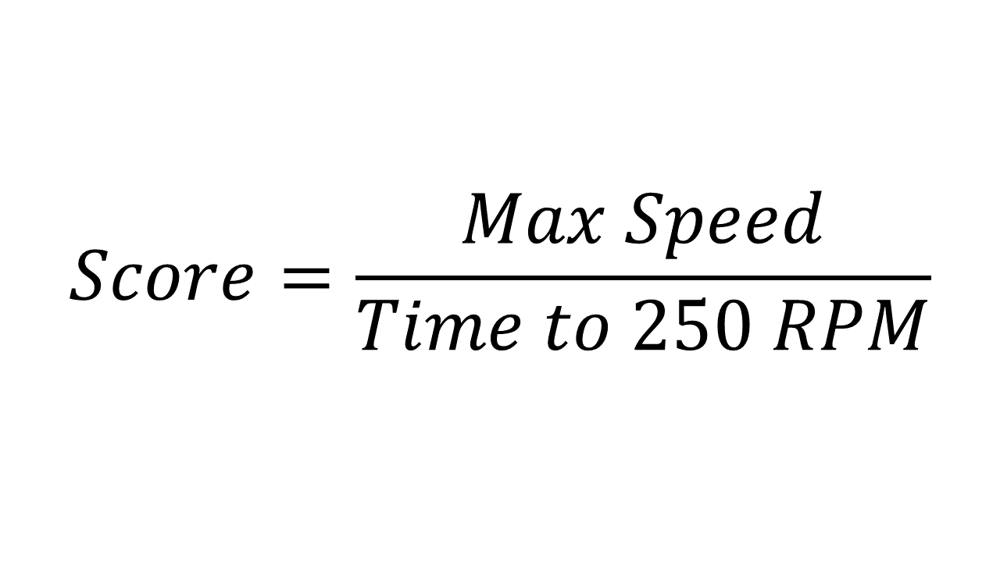
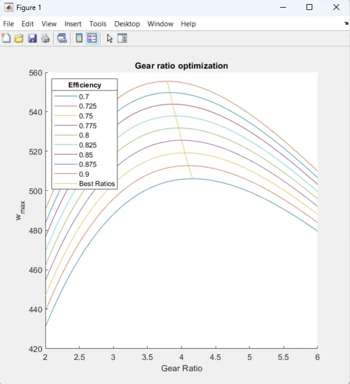

Finished Transmission

Competition Guidelines
The transmission must fit within a 6 × 6 × 8 in build volume and interface with the test bench mounting features. A tachometer measures speed, acceleration, torque, and power produced. The scoring function balances fast acceleration to 250 RPM and high top speed.



Design Overview — Two-Speed Gearbox
To maximize both acceleration and top speed, we designed a two-speed transmission using Roller Clutch Bearings (One-Way Bearings). Two bearings in opposite orientations allow distinct gear ratios to engage by reversing the motor direction via a DPDT switch.
- First gear (clockwise): 8:1 ratio — high torque for fast acceleration to 250 RPM
- Second gear (counter-clockwise): 4:1 ratio — optimized for maximum top speed


Gear Ratio Selection via MATLAB
A MATLAB script simulated gearbox performance across a range of gear ratios, solving the differential equation of drivetrain dynamics to output max speed and time to 250 RPM. Optimal results: 4:1 for speed, 8:1 for acceleration (implemented as 4:1 × 2:1 compound).



SolidWorks Model & GD&T Drawings


Troubleshooting
During assembly we found the Delrin gears were too fragile to bore out for a press fit. We manufactured custom aluminum hubs to securely mount the Roller Clutch Bearings.


Finalized Transmission


Competition Day
Results